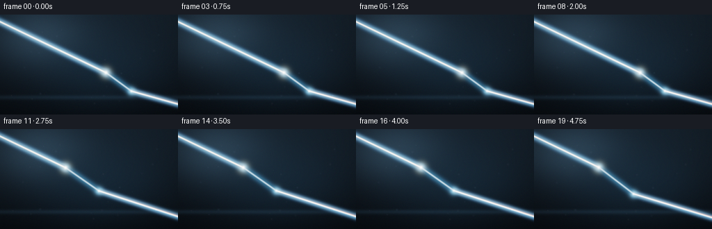
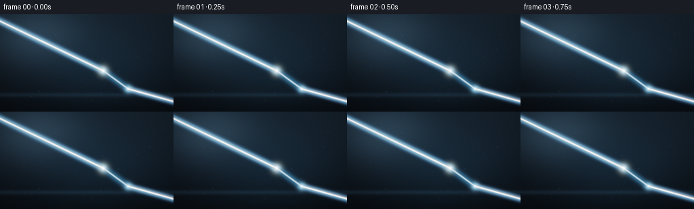
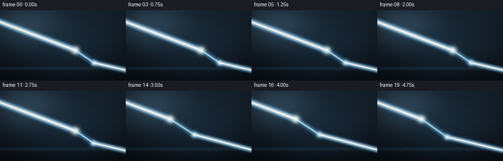
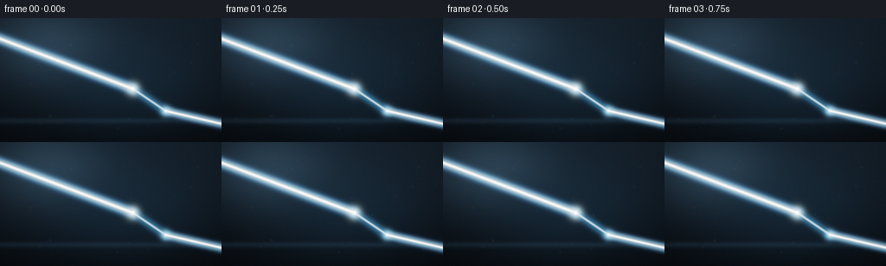
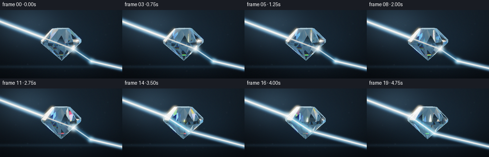
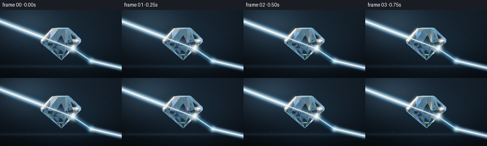
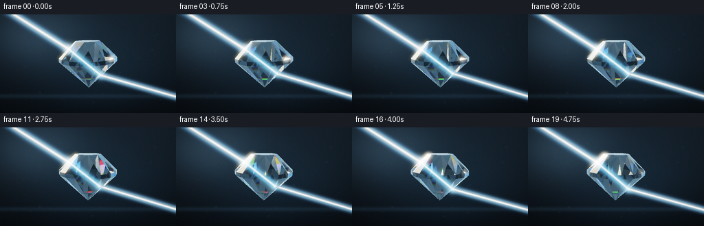
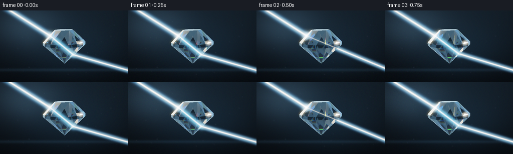

CODING AGENTS AS PIXEL WORLD MODELS
traex/DeepSeek-V4.1-Flash · phygen_089
点击播放 · 原生 RGB 像素
逐轮保存的候选
回放视频、检查图与代码变化。
每份候选均可单独播放。实际图片检查记录在下方工具轨迹中。
候选 01播放与检查图
点击播放 · 原生 RGB 像素


展开代码变化
--- 上一保存版本
+++ 本次保存版本
@@ -0,0 +1,707 @@
+"""Procedural render of a light beam passing through a glass diamond.
+
+The scene is built from a closed brilliant-cut mesh and rendered with a
+small vectorized ray tracer. No external assets, models, or render engines
+are used.
+"""
+
+from __future__ import annotations
+
+import json
+import math
+from pathlib import Path
+
+import numpy as np
+from PIL import Image, ImageFilter
+
+import artifact_io
+
+
+CASE_DIR = Path(__file__).resolve().parent
+SPEC = json.loads((CASE_DIR / "task_spec.json").read_text())
+OUT_W = int(SPEC["width"])
+OUT_H = int(SPEC["height"])
+N_FRAMES = int(SPEC["frames"])
+FPS = float(SPEC["fps"])
+SCALE = 2
+W = OUT_W * SCALE
+H = OUT_H * SCALE
+
+
+def normalize(v: np.ndarray) -> np.ndarray:
+ return v / np.maximum(np.linalg.norm(v, axis=-1, keepdims=True), 1e-8)
+
+
+def rot_y(v: np.ndarray, angle: float) -> np.ndarray:
+ c, s = math.cos(angle), math.sin(angle)
+ return np.stack(
+ (c * v[:, 0] + s * v[:, 2], v[:, 1], -s * v[:, 0] + c * v[:, 2]),
+ axis=1,
+ )
+
+
+def rot_x(v: np.ndarray, angle: float) -> np.ndarray:
+ c, s = math.cos(angle), math.sin(angle)
+ return np.stack(
+ (v[:, 0], c * v[:, 1] - s * v[:, 2], s * v[:, 1] + c * v[:, 2]),
+ axis=1,
+ )
+
+
+def build_diamond(angle: float, tilt: float):
+ """Build a 16-girdle brilliant cut with an octagonal table."""
+ n = 16
+ a = np.linspace(0.0, 2.0 * math.pi, n, endpoint=False)
+ gtop = np.stack(
+ (0.78 * np.cos(a), np.full(n, 0.045), 0.78 * np.sin(a)), axis=1
+ )
+ gbot = np.stack(
+ (0.78 * np.cos(a), np.full(n, -0.055), 0.78 * np.sin(a)), axis=1
+ )
+ ta = np.linspace(0.0, 2.0 * math.pi, 8, endpoint=False)
+ table = np.stack(
+ (0.345 * np.cos(ta), np.full(8, 0.475), 0.345 * np.sin(ta)), axis=1
+ )
+ table_center = np.array([[0.0, 0.475, 0.0]])
+ culet = np.array([[0.0, -0.82, 0.0]])
+
+ verts = [table_center, table, gtop, gbot, culet]
+ v = np.concatenate(verts, axis=0)
+ table_center_i = 0
+ table_i = 1
+ gtop_i = 9
+ gbot_i = 25
+ culet_i = 41
+
+ tris: list[tuple[int, int, int]] = []
+ kinds: list[int] = []
+
+ # Flat octagonal table, split into eight planar facets.
+ for i in range(8):
+ tris.append(
+ (table_center_i, table_i + i, table_i + (i + 1) % 8)
+ )
+ kinds.append(0)
+
+ # Crown: three triangular facets per 45-degree sector.
+ for i in range(8):
+ t0 = table_i + i
+ t1 = table_i + (i + 1) % 8
+ g0 = gtop_i + 2 * i
+ g1 = gtop_i + 2 * i + 1
+ g2 = gtop_i + (2 * i + 2) % 16
+ tris.extend(((t0, g0, g1), (t0, g1, t1), (t0, t1, g2)))
+ kinds.extend((1, 2, 1))
+
+ # Thin faceted girdle.
+ for i in range(16):
+ j = (i + 1) % 16
+ tris.extend(
+ (
+ (gtop_i + i, gtop_i + j, gbot_i + i),
+ (gtop_i + j, gbot_i + j, gbot_i + i),
+ )
+ )
+ kinds.extend((3, 3))
+
+ # Pavilion facets converge at the culet.
+ for i in range(16):
+ j = (i + 1) % 16
+ tris.append((gbot_i + i, gbot_i + j, culet_i))
+ kinds.append(4)
+
+ tri = np.asarray(tris, dtype=np.int32)
+ v = rot_x(v, tilt)
+ v = rot_y(v, angle)
+ v[:, 1] += 0.13
+
+ # Consistent outward normals make both rendering and refraction stable.
+ p0, p1, p2 = v[tri[:, 0]], v[tri[:, 1]], v[tri[:, 2]]
+ normals = normalize(np.cross(p1 - p0, p2 - p0))
+ centers = (p0 + p1 + p2) / 3.0
+ gem_center = np.array([0.0, -0.10, 0.0])
+ flip = np.sum(normals * (centers - gem_center), axis=1) < 0.0
+ tri[flip] = tri[flip][:, [0, 2, 1]]
+ p0, p1, p2 = v[tri[:, 0]], v[tri[:, 1]], v[tri[:, 2]]
+ normals = normalize(np.cross(p1 - p0, p2 - p0))
+ return v, tri, normals, np.asarray(kinds, dtype=np.int32)
+
+
+def camera_geometry():
+ cam = np.array([0.16, 0.36, 5.35], dtype=np.float64)
+ target = np.array([0.0, -0.01, 0.0], dtype=np.float64)
+ forward = normalize(target - cam)
+ right = normalize(np.cross(forward, np.array([0.0, 1.0, 0.0])))
+ up = normalize(np.cross(right, forward))
+ focal = H / (2.0 * math.tan(math.radians(28.0) / 2.0))
+ return cam, forward, right, up, focal
+
+
+def make_rays(cam, forward, right, up, focal):
+ cx, cy = W / 2.0, H / 2.0
+ px = np.arange(W, dtype=np.float64) + 0.5
+ py = np.arange(H, dtype=np.float64) + 0.5
+ sx = (px[None, :] - cx) / focal
+ sy = (cy - py[:, None]) / focal
+ dirs = (
+ forward[None, None, :]
+ + right[None, None, :] * sx[:, :, None]
+ + up[None, None, :] * sy[:, :, None]
+ )
+ return normalize(dirs)
+
+
+def project(points, cam, forward, right, up, focal):
+ points = np.atleast_2d(points)
+ rel = points - cam
+ zc = rel @ forward
+ xc = rel @ right
+ yc = rel @ up
+ zc = np.maximum(zc, 1e-5)
+ sx = W / 2.0 + focal * xc / zc
+ sy = H / 2.0 - focal * yc / zc
+ return np.stack((sx, sy), axis=1), zc
+
+
+def rasterize_gem(verts, tris, normals, cam, forward, right, up, focal, rays):
+ """Z-buffer the mesh into triangle ids and world-space hit points."""
+ depth = np.full((H, W), np.inf, dtype=np.float64)
+ tri_map = np.full((H, W), -1, dtype=np.int32)
+ screen, zc = project(verts, cam, forward, right, up, focal)
+ if np.any(zc <= 1e-4):
+ return tri_map, depth
+
+ for k, tri in enumerate(tris):
+ p = screen[tri]
+ xmin = max(0, int(math.floor(np.min(p[:, 0]))) - 1)
+ xmax = min(W - 1, int(math.ceil(np.max(p[:, 0]))) + 1)
+ ymin = max(0, int(math.floor(np.min(p[:, 1]))) - 1)
+ ymax = min(H - 1, int(math.ceil(np.max(p[:, 1]))) + 1)
+ if xmax < xmin or ymax < ymin:
+ continue
+
+ x0, y0 = p[0]
+ x1, y1 = p[1]
+ x2, y2 = p[2]
+ area = (x1 - x0) * (y2 - y0) - (y1 - y0) * (x2 - x0)
+ if abs(area) < 1e-8:
+ continue
+
+ xx = np.arange(xmin, xmax + 1, dtype=np.float64) + 0.5
+ yy = np.arange(ymin, ymax + 1, dtype=np.float64) + 0.5
+ gx, gy = np.meshgrid(xx, yy)
+ w0 = ((x1 - gx) * (y2 - gy) - (y1 - gy) * (x2 - gx)) / area
+ w1 = ((x2 - gx) * (y0 - gy) - (y2 - gy) * (x0 - gx)) / area
+ w2 = 1.0 - w0 - w1
+ inside = (w0 >= -1e-5) & (w1 >= -1e-5) & (w2 >= -1e-5)
+ if not np.any(inside):
+ continue
+
+ ry = slice(ymin, ymax + 1)
+ rx = slice(xmin, xmax + 1)
+ rd = rays[ry, rx][inside]
+ n = normals[k]
+ denom = rd @ n
+ valid = np.abs(denom) > 1e-8
+ t = np.full(rd.shape[0], np.inf)
+ t[valid] = ((verts[tri[0]] - cam) @ n) / denom[valid]
+ valid &= t > 1e-5
+ if not np.any(valid):
+ continue
+
+ sub_depth = depth[ry, rx]
+ sub_tri = tri_map[ry, rx]
+ local_inside = np.flatnonzero(inside)
+ take_local = local_inside[valid]
+ flat_depth = sub_depth.reshape(-1)
+ flat_tri = sub_tri.reshape(-1)
+ better = t[valid] < flat_depth[take_local]
+ update = take_local[better]
+ flat_depth[update] = t[valid][better]
+ flat_tri[update] = k
+
+ return tri_map, depth
+
+
+def intersect_mesh(origins, dirs, verts, tris):
+ """Vectorized Moller-Trumbore intersection for a batch of rays."""
+ n = origins.shape[0]
+ best_t = np.full(n, np.inf, dtype=np.float64)
+ best_tri = np.full(n, -1, dtype=np.int32)
+ eps = 1e-7
+ for k, tri in enumerate(tris):
+ v0, v1, v2 = verts[tri]
+ e1 = v1 - v0
+ e2 = v2 - v0
+ pvec = np.cross(dirs, e2)
+ det = np.sum(e1 * pvec, axis=1)
+ valid = np.abs(det) > 1e-9
+ inv = np.zeros_like(det)
+ inv[valid] = 1.0 / det[valid]
+ tvec = origins - v0
+ u = np.sum(tvec * pvec, axis=1) * inv
+ qvec = np.cross(tvec, e1)
+ v = np.sum(dirs * qvec, axis=1) * inv
+ t = np.sum(e2 * qvec, axis=1) * inv
+ hit = (
+ valid
+ & (u >= -eps)
+ & (v >= -eps)
+ & (u + v <= 1.0 + eps)
+ & (t > 1e-5)
+ & (t < best_t)
+ )
+ if np.any(hit):
+ best_t[hit] = t[hit]
+ best_tri[hit] = k
+ return best_t, best_tri
+
+
+def smoothstep(a: float, b: float, x: np.ndarray) -> np.ndarray:
+ q = np.clip((x - a) / (b - a), 0.0, 1.0)
+ return q * q * (3.0 - 2.0 * q)
+
+
+def env_color(dirs: np.ndarray) -> np.ndarray:
+ """A small procedural studio environment sampled by refracted rays."""
+ d = normalize(np.asarray(dirs, dtype=np.float64))
+ x, y, z = d[:, 0], d[:, 1], d[:, 2]
+ t = smoothstep(-0.85, 0.95, y)
+ bottom = np.array([0.010, 0.018, 0.026])
+ top = np.array([0.045, 0.075, 0.095])
+ col = bottom[None, :] * (1.0 - t[:, None]) + top[None, :] * t[:, None]
+
+ # Broad warm softbox at the upper left, in front of the gem.
+ key = np.array([-0.50, 0.56, -0.66])
+ key = key / np.linalg.norm(key)
+ kd = np.clip(d @ key, -1.0, 1.0)
+ key_glow = smoothstep(0.80, 0.985, kd) + 0.22 * np.exp(-((1.0 - kd) / 0.10))
+ col += np.array([2.30, 1.92, 1.34])[None, :] * key_glow[:, None]
+
+ # Cool strip light from camera right.
+ cool = np.array([0.78, 0.18, -0.60])
+ cool = cool / np.linalg.norm(cool)
+ cd = np.clip(d @ cool, -1.0, 1.0)
+ cool_glow = smoothstep(0.88, 0.995, cd)
+ col += np.array([0.16, 0.62, 1.52])[None, :] * cool_glow[:, None]
+
+ # Narrow rear rim makes the pavilion facets separate from the background.
+ rim = np.array([0.04, 0.50, 0.86])
+ rim = rim / np.linalg.norm(rim)
+ rd = np.clip(d @ rim, -1.0, 1.0)
+ rim_glow = smoothstep(0.93, 0.999, rd)
+ col += np.array([0.40, 0.72, 1.15])[None, :] * rim_glow[:, None]
+
+ # Fine overhead pin light.
+ pin = np.array([0.10, 0.98, -0.12])
+ pin = pin / np.linalg.norm(pin)
+ pd = np.clip(d @ pin, -1.0, 1.0)
+ col += np.array([0.72, 0.72, 0.66])[None, :] * smoothstep(
+ 0.985, 0.9998, pd
+ )[:, None]
+
+ # A faint blue floor bounce.
+ floor = np.exp(-np.maximum(-y - 0.30, 0.0) / 0.18)
+ col += np.array([0.012, 0.032, 0.052])[None, :] * floor[:, None]
+
+ # Vertical atmospheric bands keep reflections from looking flat.
+ band = np.exp(-((z + 0.15) / 0.12) ** 2) * np.exp(-((y - 0.1) / 0.55) ** 2)
+ col += np.array([0.035, 0.055, 0.070])[None, :] * band[:, None]
+ return np.maximum(col, 0.0)
+
+
+def refract(d: np.ndarray, n_incident: np.ndarray, eta: float):
+ cosi = -np.sum(d * n_incident, axis=1)
+ k = 1.0 - eta * eta * (1.0 - cosi * cosi)
+ ok = k >= 0.0
+ out = np.zeros_like(d)
+ if np.any(ok):
+ out[ok] = (
+ eta * d[ok]
+ + (eta * cosi[ok] - np.sqrt(np.maximum(k[ok], 0.0)))[:, None]
+ * n_incident[ok]
+ )
+ return out, ok, cosi
+
+
+def fresnel(cosi: np.ndarray, ior: float) -> np.ndarray:
+ c = np.clip(cosi, 0.0, 1.0)
+ f0 = ((ior - 1.0) / (ior + 1.0)) ** 2
+ return f0 + (1.0 - f0) * (1.0 - c) ** 5
+
+
+def trace_transmission(pos, d0, n0, ior, verts, tris, normals):
+ """Trace one spectral ray through the gem, including TIR bounces."""
+ eta_in = 1.0 / ior
+ d, ok, cosi = refract(d0, n0, eta_in)
+ rgb = np.zeros_like(pos)
+ if not np.any(ok):
+ return rgb
+
+ f_entry = fresnel(cosi, ior)
+ weight = np.where(ok, 1.0 - f_entry, 0.0)
+ d = np.where(ok[:, None], d, 0.0)
+ p = pos + d * 2e-4
+
+ for _ in range(3):
+ active = weight > 1e-6
+ if not np.any(active):
+ break
+ t, tri = intersect_mesh(p, d, verts, tris)
+ hit = active & (tri >= 0)
+ if not np.any(hit):
+ weight[:] = 0.0
+ break
+
+ ex = p + d * t[:, None]
+ nout = normals[np.maximum(tri, 0)].copy()
+ flip = np.sum(d * nout, axis=1) < 0.0
+ nout[flip] *= -1.0
+ n_inc = -nout
+
+ dout, exit_ok, cosi_exit = refract(d, n_inc, ior)
+ f_exit = fresnel(cosi_exit, ior)
+ transmit = hit & exit_ok
+ if np.any(transmit):
+ rgb[transmit] += (
+ weight[transmit, None]
+ * (1.0 - f_exit[transmit, None])
+ * env_color(dout[transmit])
+ )
+
+ # The reflected part stays in the diamond for another bounce.
+ reflected = d - 2.0 * np.sum(d * nout, axis=1, keepdims=True) * nout
+ d = np.where(hit[:, None], reflected, d)
+ p = np.where(hit[:, None], ex + d * 2e-4, p)
+ weight = np.where(hit, weight * np.where(exit_ok, f_exit, 0.985), 0.0)
+
+ rgb += weight[:, None] * np.array([0.030, 0.060, 0.090])[None, :]
+ return rgb
+
+
+def point_segment_distance(points, a, b):
+ ab = b - a
+ denom = max(float(ab @ ab), 1e-9)
+ t = np.clip(((points - a) @ ab) / denom, 0.0, 1.0)
+ closest = a[None, :] + t[:, None] * ab[None, :]
+ return np.linalg.norm(points - closest, axis=1)
+
+
+def beam_path(verts, tris, normals):
+ start = np.array([-2.72, 1.34, 0.46])
+ target = np.array([0.02, -0.015, 0.0])
+ direction = normalize(target - start)
+ t, tri = intersect_mesh(start[None, :], direction[None, :], verts, tris)
+ if tri[0] < 0:
+ entry = start + direction * 2.6
+ entry_n = normalize(np.array([-0.3, 0.7, 0.6]))
+ else:
+ entry = start + direction * t[0]
+ entry_n = normals[tri[0]].copy()
+ if entry_n @ direction > 0:
+ entry_n *= -1.0
+
+ # Green light follows the central visible path through the glass.
+ eta = 1.0 / 2.42
+ inside, _, _ = refract(direction[None, :], entry_n[None, :], eta)
+ inside_dir = inside[0]
+ t2, tri2 = intersect_mesh(
+ (entry + inside_dir * 3e-4)[None, :], inside_dir[None, :], verts, tris
+ )
+ if tri2[0] >= 0:
+ exit_point = entry + inside_dir * t2[0]
+ else:
+ exit_point = entry + inside_dir * 0.9
+ return start, entry, exit_point
+
+
+def screen_line_field(p0, p1, sigma):
+ yy, xx = np.mgrid[0:H, 0:W]
+ vx, vy = p1[0] - p0[0], p1[1] - p0[1]
+ denom = max(vx * vx + vy * vy, 1e-9)
+ t = np.clip(((xx - p0[0]) * vx + (yy - p0[1]) * vy) / denom, 0.0, 1.0)
+ dx = xx - (p0[0] + t * vx)
+ dy = yy - (p0[1] + t * vy)
+ return np.exp(-0.5 * (dx * dx + dy * dy) / (sigma * sigma))
+
+
+def add_beam_segment(layer, p0, p1, core_sigma, glow_sigma, core, glow):
+ field = screen_line_field(p0, p1, core_sigma)
+ halo = screen_line_field(p0, p1, glow_sigma)
+ layer += field[:, :, None] * np.asarray(core)[None, None, :]
+ layer += halo[:, :, None] * np.asarray(glow)[None, None, :]
+
+
+def add_flare(layer, p, sigma, color, strength):
+ yy, xx = np.mgrid[0:H, 0:W]
+ d2 = (xx - p[0]) ** 2 + (yy - p[1]) ** 2
+ core = np.exp(-0.5 * d2 / (sigma * sigma))
+ halo = np.exp(-0.5 * d2 / ((sigma * 4.2) ** 2))
+ layer += core[:, :, None] * np.asarray(color)[None, None, :] * strength
+ layer += halo[:, :, None] * np.asarray(color)[None, None, :] * strength * 0.16
+
+
+def background(rays):
+ yy, xx = np.mgrid[0:H, 0:W]
+ u = xx / (W - 1)
+ v = yy / (H - 1)
+ top = np.array([0.010, 0.019, 0.028])
+ bottom = np.array([0.0018, 0.0040, 0.0070])
+ col = bottom[None, None, :] * v[:, :, None] + top[None, None, :] * (
+ 1.0 - v[:, :, None]
+ )
+ glow = np.exp(
+ -(((u - 0.19) / 0.26) ** 2 + ((v - 0.20) / 0.30) ** 2)
+ )
+ col += glow[:, :, None] * np.array([0.018, 0.030, 0.040])[None, None, :]
+ haze = np.exp(
+ -(((u - 0.56) / 0.34) ** 2 + ((v - 0.55) / 0.36) ** 2)
+ )
+ col += haze[:, :, None] * np.array([0.004, 0.011, 0.017])[None, None, :]
+
+ # A very soft, nearly invisible floor horizon.
+ horizon = np.exp(-((v - 0.83) / 0.022) ** 2)
+ col += horizon[:, :, None] * np.array([0.006, 0.012, 0.017])[None, None, :]
+ return col
+
+
+def shade_gem(rays, tri_map, depth, verts, tris, normals, kinds, beam):
+ yy, xx = np.mgrid[0:H, 0:W]
+ mask = tri_map >= 0
+ rgb = np.zeros((H, W, 3), dtype=np.float64)
+ alpha = np.zeros((H, W), dtype=np.float64)
+ if not np.any(mask):
+ return rgb, alpha
+
+ flat_idx = np.flatnonzero(mask.reshape(-1))
+ d_in = rays.reshape(-1, 3)[flat_idx]
+ tri = tri_map.reshape(-1)[flat_idx]
+ t = depth.reshape(-1)[flat_idx]
+ cam = np.array([0.16, 0.36, 5.35])
+ pos = cam[None, :] + d_in * t[:, None]
+ n = normals[tri].copy()
+ flip = np.sum(n * d_in, axis=1) > 0.0
+ n[flip] *= -1.0
+
+ cosv = np.clip(-np.sum(n * d_in, axis=1), 0.0, 1.0)
+ reflected = d_in - 2.0 * np.sum(d_in * n, axis=1, keepdims=True) * n
+ col = env_color(reflected) * fresnel(cosv, 2.42)[:, None]
+
+ spectral = (
+ (2.34, np.array([1.00, 0.0, 0.0])),
+ (2.42, np.array([0.0, 1.00, 0.0])),
+ (2.52, np.array([0.0, 0.0, 1.00])),
+ )
+ for ior, channel in spectral:
+ part = trace_transmission(pos, d_in, n, ior, verts, tris, normals)
+ col += part * channel[None, :]
+
+ # Small facet-specific glints and a narrow grazing-angle edge.
+ key_dirs = (
+ normalize(np.array([-0.50, 0.56, -0.66])),
+ normalize(np.array([0.78, 0.18, -0.60])),
+ normalize(np.array([0.04, 0.50, 0.86])),
+ )
+ for light_dir, tint, power, strength in (
+ (key_dirs[0], np.array([1.0, 0.93, 0.78]), 150.0, 3.0),
+ (key_dirs[1], np.array([0.62, 0.82, 1.0]), 190.0, 1.4),
+ (key_dirs[2], np.array([0.55, 0.80, 1.0]), 230.0, 0.9),
+ ):
+ spec = np.clip(np.sum(reflected * light_dir[None, :], axis=1), 0.0, 1.0)
+ col += (
+ (spec ** power)[:, None]
+ * tint[None, :]
+ * strength
+ )
+ edge = (1.0 - cosv) ** 4
+ col += edge[:, None] * np.array([0.12, 0.24, 0.34])[None, :]
+
+ # The visible beam adds a local white-cyan glow inside the volume.
+ _, entry, exit_point = beam
+ dist_in = point_segment_distance(pos, entry, exit_point)
+ inside_glow = np.exp(-0.5 * (dist_in / 0.045) ** 2)
+ inside_halo = np.exp(-0.5 * (dist_in / 0.14) ** 2)
+ col += inside_glow[:, None] * np.array([1.05, 1.34, 1.60])[None, :]
+ col += inside_halo[:, None] * np.array([0.10, 0.25, 0.38])[None, :]
+
+ # A gentle facet tint variation prevents adjacent glass faces from merging.
+ variation = 0.93 + 0.10 * (((tri * 37) % 19) / 18.0)
+ col *= variation[:, None]
+
+ rgb.reshape(-1, 3)[flat_idx] = col
+ # Grazing edges are more reflective and therefore slightly more opaque.
+ a = 0.79 + 0.19 * fresnel(cosv, 2.42)
+ alpha.reshape(-1)[flat_idx] = a
+ return rgb, alpha
+
+
+def blur_channel(arr: np.ndarray, radius: float) -> np.ndarray:
+ size = max(3, int(math.ceil(radius * 2.5)) * 2 + 1)
+ coords = np.arange(size, dtype=np.float64) - (size - 1) / 2.0
+ kernel = np.exp(-0.5 * (coords / radius) ** 2)
+ kernel /= kernel.sum()
+ pad = size // 2
+ padded = np.pad(arr.astype(np.float64), ((pad, pad), (0, 0)), mode="edge")
+ temp = sum(kernel[i] * padded[i : i + arr.shape[0]] for i in range(size))
+ padded = np.pad(temp, ((0, 0), (pad, pad)), mode="edge")
+ return sum(kernel[i] * padded[:, i : i + arr.shape[1]] for i in range(size))
+
+
+def post_process(hdr: np.ndarray, frame_index: int) -> Image.Image:
+ bright = np.maximum(hdr - 0.72, 0.0)
+ bloom = np.empty_like(bright)
+ for c in range(3):
+ bloom[:, :, c] = blur_channel(bright[:, :, c], 5.0)
+ hdr = hdr + bloom * 0.46
+
+ yy, xx = np.mgrid[0:H, 0:W]
+ u = (xx / (W - 1) - 0.5) * 2.0
+ v = (yy / (H - 1) - 0.5) * 2.0
+ vignette = np.clip(1.08 - 0.22 * (u * u + 0.72 * v * v), 0.66, 1.0)
+ hdr *= vignette[:, :, None]
+
+ x = np.maximum(hdr * 1.18, 0.0)
+ mapped = (x * (2.51 * x + 0.03)) / (x * (2.43 * x + 0.59) + 0.14)
+ mapped = np.clip(mapped, 0.0, 1.0) ** (1.0 / 2.2)
+ image = Image.fromarray(
+ np.clip(mapped * 255.0 + 0.5, 0, 255).astype(np.uint8), mode="RGB"
+ )
+ image = image.resize((OUT_W, OUT_H), Image.Resampling.LANCZOS)
+ arr = np.asarray(image).astype(np.float32)
+
+ # Sparse drifting dust catches the beam without turning the background busy.
+ rng = np.random.default_rng(9301)
+ t = frame_index / FPS
+ for _ in range(23):
+ bx = rng.uniform(0.05, 0.95)
+ by = rng.uniform(0.10, 0.90)
+ phase = rng.uniform(0.0, 2.0 * math.pi)
+ px = (bx + 0.007 * math.sin(0.55 * t + phase)) * OUT_W
+ py = (by + 0.010 * math.cos(0.42 * t + phase)) * OUT_H
+ sigma = rng.uniform(0.45, 1.05)
+ power = rng.uniform(5.0, 18.0)
+ cool = rng.uniform(0.0, 1.0)
+ tint = np.array([0.55 + 0.35 * cool, 0.70, 0.86 - 0.18 * cool])
+ yy0 = np.arange(OUT_H)[:, None]
+ xx0 = np.arange(OUT_W)[None, :]
+ dot = np.exp(-0.5 * ((xx0 - px) ** 2 + (yy0 - py) ** 2) / sigma**2)
+ arr += dot[:, :, None] * tint[None, None, :] * power
+
+ rng2 = np.random.default_rng(7700 + frame_index)
+ arr += rng2.normal(0.0, 0.75, arr.shape)
+ return Image.fromarray(np.clip(arr, 0, 255).astype(np.uint8), mode="RGB")
+
+
+def render_frame(frame_index: int) -> np.ndarray:
+ t = frame_index / FPS
+ angle = math.radians(-8.5 + 17.0 * frame_index / (N_FRAMES - 1))
+ tilt = math.radians(7.5)
+ verts, tris, normals, kinds = build_diamond(angle, tilt)
+
+ cam, forward, right, up, focal = camera_geometry()
+ rays = make_rays(cam, forward, right, up, focal)
+ tri_map, depth = rasterize_gem(
+ verts, tris, normals, cam, forward, right, up, focal, rays
+ )
+ beam = beam_path(verts, tris, normals)
+ gem_rgb, gem_alpha = shade_gem(
+ rays, tri_map, depth, verts, tris, normals, kinds, beam
+ )
+
+ hdr = background(rays)
+ beam_layer = np.zeros_like(hdr)
+ start, entry, exit_point = beam
+ end = np.array([3.15, -1.18, 0.66])
+ p_start, _ = project(start, cam, forward, right, up, focal)
+ p_entry, _ = project(entry, cam, forward, right, up, focal)
+ p_exit, _ = project(exit_point, cam, forward, right, up, focal)
+ p_end, _ = project(end, cam, forward, right, up, focal)
+ p_start, p_entry = p_start[0], p_entry[0]
+ p_exit, p_end = p_exit[0], p_end[0]
+
+ pulse = 0.96 + 0.04 * math.sin(2.0 * math.pi * 0.55 * t)
+ add_beam_segment(
+ beam_layer,
+ p_start,
+ p_entry,
+ 1.15,
+ 6.2,
+ np.array([1.75, 1.58, 1.18]) * pulse,
+ np.array([0.10, 0.24, 0.40]) * pulse,
+ )
+ add_beam_segment(
+ beam_layer,
+ p_exit,
+ p_end,
+ 1.05,
+ 5.5,
+ np.array([1.52, 1.38, 1.02]) * pulse,
+ np.array([0.08, 0.20, 0.34]) * pulse,
+ )
+
+ # Subtle prismatic fan on the outgoing side.
+ vec = p_end - p_exit
+ vlen = max(float(np.linalg.norm(vec)), 1e-6)
+ perp = np.array([-vec[1], vec[0]]) / vlen
+ for offset, color in (
+ (-3.4, np.array([0.80, 0.055, 0.018])),
+ (0.0, np.array([0.08, 0.72, 0.16])),
+ (3.4, np.array([0.035, 0.16, 0.90])),
+ ):
+ q0 = p_exit + perp * offset * 0.16
+ q1 = p_end + perp * offset
+ add_beam_segment(
+ beam_layer,
+ q0,
+ q1,
+ 0.75,
+ 2.8,
+ color * 0.46,
+ color * 0.07,
+ )
+
+ hdr += beam_layer
+ hdr = hdr * (1.0 - gem_alpha[:, :, None]) + gem_rgb * gem_alpha[:, :, None]
+
+ # The internal streak is composited after the glass so it stays legible.
+ inside_layer = np.zeros_like(hdr)
+ add_beam_segment(
+ inside_layer,
+ p_entry,
+ p_exit,
+ 1.35,
+ 7.0,
+ np.array([1.25, 1.65, 2.05]) * pulse,
+ np.array([0.11, 0.32, 0.50]) * pulse,
+ )
+ hdr += inside_layer * (0.30 + 0.70 * gem_alpha[:, :, None])
+
+ add_flare(
+ hdr,
+ p_entry,
+ 2.5,
+ np.array([1.20, 1.28, 1.10]),
+ 0.95 * pulse,
+ )
+ add_flare(
+ hdr,
+ p_exit,
+ 2.1,
+ np.array([0.66, 1.05, 1.25]),
+ 0.62 * pulse,
+ )
+
+ return np.asarray(post_process(hdr, frame_index))
+
+
+def main():
+ frames = []
+ for i in range(N_FRAMES):
+ frames.append(render_frame(i))
+ print(f"rendered frame {i + 1:02d}/{N_FRAMES}", flush=True)
+ artifact_io.save(np.asarray(frames, dtype=np.uint8), CASE_DIR)
+ print("saved frames, inspection sheet, and interactive player", flush=True)
+
+
+if __name__ == "__main__":
+ main()
候选 02播放与检查图
点击播放 · 原生 RGB 像素


展开代码变化
--- 上一保存版本
+++ 本次保存版本
@@ -388,8 +388,8 @@
def beam_path(verts, tris, normals):
- start = np.array([-2.72, 1.34, 0.46])
- target = np.array([0.02, -0.015, 0.0])
+ start = np.array([-2.55, 0.98, 0.42])
+ target = np.array([0.01, -0.02, 0.0])
direction = normalize(target - start)
t, tri = intersect_mesh(start[None, :], direction[None, :], verts, tris)
if tri[0] < 0:
@@ -485,7 +485,7 @@
cosv = np.clip(-np.sum(n * d_in, axis=1), 0.0, 1.0)
reflected = d_in - 2.0 * np.sum(d_in * n, axis=1, keepdims=True) * n
- col = env_color(reflected) * fresnel(cosv, 2.42)[:, None]
+ col = env_color(reflected) * (0.30 + 0.70 * fresnel(cosv, 2.42))[:, None]
spectral = (
(2.34, np.array([1.00, 0.0, 0.0])),
@@ -494,7 +494,7 @@
)
for ior, channel in spectral:
part = trace_transmission(pos, d_in, n, ior, verts, tris, normals)
- col += part * channel[None, :]
+ col += part * channel[None, :] * 1.55
# Small facet-specific glints and a narrow grazing-angle edge.
key_dirs = (
@@ -514,7 +514,7 @@
* strength
)
edge = (1.0 - cosv) ** 4
- col += edge[:, None] * np.array([0.12, 0.24, 0.34])[None, :]
+ col += edge[:, None] * np.array([0.24, 0.40, 0.52])[None, :]
# The visible beam adds a local white-cyan glow inside the volume.
_, entry, exit_point = beam
@@ -530,7 +530,7 @@
rgb.reshape(-1, 3)[flat_idx] = col
# Grazing edges are more reflective and therefore slightly more opaque.
- a = 0.79 + 0.19 * fresnel(cosv, 2.42)
+ a = 0.70 + 0.24 * fresnel(cosv, 2.42)
alpha.reshape(-1)[flat_idx] = a
return rgb, alpha
@@ -552,7 +552,7 @@
bloom = np.empty_like(bright)
for c in range(3):
bloom[:, :, c] = blur_channel(bright[:, :, c], 5.0)
- hdr = hdr + bloom * 0.46
+ hdr = hdr + bloom * 0.56
yy, xx = np.mgrid[0:H, 0:W]
u = (xx / (W - 1) - 0.5) * 2.0
@@ -594,7 +594,7 @@
def render_frame(frame_index: int) -> np.ndarray:
t = frame_index / FPS
- angle = math.radians(-8.5 + 17.0 * frame_index / (N_FRAMES - 1))
+ angle = math.radians(-11.0 + 22.0 * frame_index / (N_FRAMES - 1))
tilt = math.radians(7.5)
verts, tris, normals, kinds = build_diamond(angle, tilt)
@@ -611,7 +611,7 @@
hdr = background(rays)
beam_layer = np.zeros_like(hdr)
start, entry, exit_point = beam
- end = np.array([3.15, -1.18, 0.66])
+ end = np.array([2.90, -0.97, 0.66])
p_start, _ = project(start, cam, forward, right, up, focal)
p_entry, _ = project(entry, cam, forward, right, up, focal)
p_exit, _ = project(exit_point, cam, forward, right, up, focal)
@@ -624,19 +624,19 @@
beam_layer,
p_start,
p_entry,
- 1.15,
- 6.2,
- np.array([1.75, 1.58, 1.18]) * pulse,
- np.array([0.10, 0.24, 0.40]) * pulse,
+ 1.55,
+ 7.4,
+ np.array([2.05, 1.82, 1.29]) * pulse,
+ np.array([0.13, 0.29, 0.47]) * pulse,
)
add_beam_segment(
beam_layer,
p_exit,
p_end,
- 1.05,
- 5.5,
- np.array([1.52, 1.38, 1.02]) * pulse,
- np.array([0.08, 0.20, 0.34]) * pulse,
+ 1.20,
+ 6.0,
+ np.array([1.72, 1.53, 1.10]) * pulse,
+ np.array([0.10, 0.24, 0.39]) * pulse,
)
# Subtle prismatic fan on the outgoing side.
@@ -644,9 +644,9 @@
vlen = max(float(np.linalg.norm(vec)), 1e-6)
perp = np.array([-vec[1], vec[0]]) / vlen
for offset, color in (
- (-3.4, np.array([0.80, 0.055, 0.018])),
+ (-2.7, np.array([0.70, 0.045, 0.012])),
(0.0, np.array([0.08, 0.72, 0.16])),
- (3.4, np.array([0.035, 0.16, 0.90])),
+ (2.7, np.array([0.025, 0.12, 0.78])),
):
q0 = p_exit + perp * offset * 0.16
q1 = p_end + perp * offset
@@ -654,10 +654,10 @@
beam_layer,
q0,
q1,
- 0.75,
- 2.8,
- color * 0.46,
- color * 0.07,
+ 0.62,
+ 2.2,
+ color * 0.36,
+ color * 0.045,
)
hdr += beam_layer
候选 03播放与检查图
点击播放 · 原生 RGB 像素


展开代码变化
--- 上一保存版本
+++ 本次保存版本
@@ -190,10 +190,13 @@
xx = np.arange(xmin, xmax + 1, dtype=np.float64) + 0.5
yy = np.arange(ymin, ymax + 1, dtype=np.float64) + 0.5
gx, gy = np.meshgrid(xx, yy)
- w0 = ((x1 - gx) * (y2 - gy) - (y1 - gy) * (x2 - gx)) / area
- w1 = ((x2 - gx) * (y0 - gy) - (y2 - gy) * (x0 - gx)) / area
- w2 = 1.0 - w0 - w1
- inside = (w0 >= -1e-5) & (w1 >= -1e-5) & (w2 >= -1e-5)
+ e0 = (x1 - gx) * (y2 - gy) - (y1 - gy) * (x2 - gx)
+ e1 = (x2 - gx) * (y0 - gy) - (y2 - gy) * (x0 - gx)
+ e2 = (x0 - gx) * (y1 - gy) - (y0 - gy) * (x1 - gx)
+ inside = (
+ ((e0 >= -1e-5) & (e1 >= -1e-5) & (e2 >= -1e-5))
+ | ((e0 <= 1e-5) & (e1 <= 1e-5) & (e2 <= 1e-5))
+ )
if not np.any(inside):
continue
@@ -209,16 +212,18 @@
if not np.any(valid):
continue
- sub_depth = depth[ry, rx]
- sub_tri = tri_map[ry, rx]
local_inside = np.flatnonzero(inside)
take_local = local_inside[valid]
- flat_depth = sub_depth.reshape(-1)
- flat_tri = sub_tri.reshape(-1)
- better = t[valid] < flat_depth[take_local]
+ # Index the full-frame buffers directly. A non-contiguous tile view
+ # would produce a copy, silently discarding the depth updates.
+ flat_depth = depth.reshape(-1)
+ flat_tri = tri_map.reshape(-1)
+ rows, cols = np.divmod(take_local, xmax - xmin + 1)
+ global_index = (rows + ymin) * W + (cols + xmin)
+ better = t[valid] < flat_depth[global_index]
update = take_local[better]
- flat_depth[update] = t[valid][better]
- flat_tri[update] = k
+ flat_depth[global_index[better]] = t[valid][better]
+ flat_tri[global_index[better]] = k
return tri_map, depth
候选 04播放与检查图
点击播放 · 原生 RGB 像素

展开代码变化
--- 上一保存版本
+++ 本次保存版本
@@ -393,8 +393,8 @@
def beam_path(verts, tris, normals):
- start = np.array([-2.55, 0.98, 0.42])
- target = np.array([0.01, -0.02, 0.0])
+ start = np.array([-2.70, 1.80, 0.45])
+ target = np.array([0.01, 0.05, 0.0])
direction = normalize(target - start)
t, tri = intersect_mesh(start[None, :], direction[None, :], verts, tris)
if tri[0] < 0:
@@ -490,7 +490,7 @@
cosv = np.clip(-np.sum(n * d_in, axis=1), 0.0, 1.0)
reflected = d_in - 2.0 * np.sum(d_in * n, axis=1, keepdims=True) * n
- col = env_color(reflected) * (0.30 + 0.70 * fresnel(cosv, 2.42))[:, None]
+ col = env_color(reflected) * (0.20 + 0.80 * fresnel(cosv, 2.42))[:, None]
spectral = (
(2.34, np.array([1.00, 0.0, 0.0])),
@@ -499,7 +499,7 @@
)
for ior, channel in spectral:
part = trace_transmission(pos, d_in, n, ior, verts, tris, normals)
- col += part * channel[None, :] * 1.55
+ col += part * channel[None, :] * 0.92
# Small facet-specific glints and a narrow grazing-angle edge.
key_dirs = (
@@ -519,7 +519,7 @@
* strength
)
edge = (1.0 - cosv) ** 4
- col += edge[:, None] * np.array([0.24, 0.40, 0.52])[None, :]
+ col += edge[:, None] * np.array([0.30, 0.48, 0.62])[None, :]
# The visible beam adds a local white-cyan glow inside the volume.
_, entry, exit_point = beam
@@ -530,12 +530,12 @@
col += inside_halo[:, None] * np.array([0.10, 0.25, 0.38])[None, :]
# A gentle facet tint variation prevents adjacent glass faces from merging.
- variation = 0.93 + 0.10 * (((tri * 37) % 19) / 18.0)
+ variation = 0.84 + 0.24 * (((tri * 37) % 19) / 18.0)
col *= variation[:, None]
rgb.reshape(-1, 3)[flat_idx] = col
# Grazing edges are more reflective and therefore slightly more opaque.
- a = 0.70 + 0.24 * fresnel(cosv, 2.42)
+ a = 0.83 + 0.15 * fresnel(cosv, 2.42)
alpha.reshape(-1)[flat_idx] = a
return rgb, alpha
@@ -616,7 +616,7 @@
hdr = background(rays)
beam_layer = np.zeros_like(hdr)
start, entry, exit_point = beam
- end = np.array([2.90, -0.97, 0.66])
+ end = np.array([2.65, -0.90, 0.66])
p_start, _ = project(start, cam, forward, right, up, focal)
p_entry, _ = project(entry, cam, forward, right, up, focal)
p_exit, _ = project(exit_point, cam, forward, right, up, focal)
候选 05播放与检查图
点击播放 · 原生 RGB 像素


展开代码变化
--- 上一保存版本
+++ 本次保存版本
@@ -129,7 +129,7 @@
def camera_geometry():
cam = np.array([0.16, 0.36, 5.35], dtype=np.float64)
- target = np.array([0.0, -0.01, 0.0], dtype=np.float64)
+ target = np.array([0.02, -0.02, 0.0], dtype=np.float64)
forward = normalize(target - cam)
right = normalize(np.cross(forward, np.array([0.0, 1.0, 0.0])))
up = normalize(np.cross(right, forward))
@@ -490,7 +490,7 @@
cosv = np.clip(-np.sum(n * d_in, axis=1), 0.0, 1.0)
reflected = d_in - 2.0 * np.sum(d_in * n, axis=1, keepdims=True) * n
- col = env_color(reflected) * (0.20 + 0.80 * fresnel(cosv, 2.42))[:, None]
+ col = env_color(reflected) * (0.22 + 0.78 * fresnel(cosv, 2.42))[:, None]
spectral = (
(2.34, np.array([1.00, 0.0, 0.0])),
@@ -499,7 +499,7 @@
)
for ior, channel in spectral:
part = trace_transmission(pos, d_in, n, ior, verts, tris, normals)
- col += part * channel[None, :] * 0.92
+ col += part * channel[None, :] * 1.02
# Small facet-specific glints and a narrow grazing-angle edge.
key_dirs = (
@@ -649,9 +649,9 @@
vlen = max(float(np.linalg.norm(vec)), 1e-6)
perp = np.array([-vec[1], vec[0]]) / vlen
for offset, color in (
- (-2.7, np.array([0.70, 0.045, 0.012])),
- (0.0, np.array([0.08, 0.72, 0.16])),
- (2.7, np.array([0.025, 0.12, 0.78])),
+ (-3.2, np.array([0.92, 0.060, 0.016])),
+ (0.0, np.array([0.10, 0.92, 0.20])),
+ (3.2, np.array([0.030, 0.16, 1.00])),
):
q0 = p_exit + perp * offset * 0.16
q1 = p_end + perp * offset
@@ -661,8 +661,8 @@
q1,
0.62,
2.2,
- color * 0.36,
- color * 0.045,
+ color * 0.50,
+ color * 0.060,
)
hdr += beam_layer
候选 06播放与检查图
可观测工具轨迹
实际执行的命令与返回图片。
命令 1exit 0
/bin/bash -c "pwd && rg --files -g 'prompt.txt' -g 'GENERATION_RULES.md' -g 'task_spec.json' -g '"'!*.mp4'"' -g '"'!*.webm'"'"
命令 2exit 0
/bin/bash -c "git status --short && find . -maxdepth 2 -type f | sort | sed -n '1,200p'"
命令 3exit 0
/bin/bash -c 'cat prompt.txt'
命令 4exit 0
/bin/bash -c 'cat GENERATION_RULES.md'
命令 5exit 0
/bin/bash -c "cat task_spec.json && printf '\\n--- artifact_io.py ---\\n' && sed -n '1,240p' artifact_io.py"
命令 6exit 0
/bin/bash -c "which ffmpeg || true; python - <<'PY'
import PIL, numpy
print('Pillow', PIL.__version__, 'numpy', numpy.__version__)
PY"命令 7exit 1
/bin/bash -c 'python generate.py'
命令 8exit 0
/bin/bash -c 'python generate.py'
命令 9exit 0
/bin/bash -c "python - <<'PY'
from PIL import Image
import numpy as np
im=Image.open('inspection.png')
print('inspection', im.size)
for f in ['frames/00.png','frames/04.png','frames/09.png','frames/14.png','frames/19.png']:
a=np.asarray(Image.open(f))
print(f, 'mean', a.mean((0,1)).round(2), 'min/max', a.min(), a.max())
PY"命令 10exit 0
/bin/bash -c 'ls -lh frames/*.png pixels.npz inspection.png transition_check.png index.html generate.py | tail -30'
命令 11exit 0
/bin/bash -c "python - <<'PY'
from PIL import Image, ImageOps, ImageFilter
import numpy as np
chars=' .:-=+*#%@'
for fn in ['frames/00.png','frames/10.png','frames/19.png']:
im=Image.open(fn).convert('L').resize((100,36))
a=np.asarray(im,dtype=float)
lo,hi=np.percentile(a,[1,99])
q=np.clip((a-lo)/(hi-lo),0,1)
print('\\n',fn, 'percentiles',lo,hi)
for row in q:
print(''.join(chars[min(len(chars)-1,int(x*(len(chars)-1)+.5))] for x in row))
PY"命令 12exit 0
/bin/bash -c "python - <<'PY'
from PIL import Image
import numpy as np
for i in [0,19]:
a=np.asarray(Image.open(f'frames/{i:02d}.png')).astype(float)
# occupancy by brightness > 80 and > 130
for th in [50,80,130,180,220]:
m=a.mean(2)>th
ys,xs=np.where(m)
print(i,th,len(xs), (xs.min(),xs.max(),ys.min(),ys.max()) if len(xs) else None)
PY"命令 13exit 0
/bin/bash -c "python - <<'PY'
from PIL import Image
import numpy as np
for i in [0,9,19]:
a=np.asarray(Image.open(f'frames/{i:02d}.png')).astype(float)
print('frame',i)
for y in range(0,144,12):
vals=[]
for x in range(0,256,16):
p=a[y:y+12,x:x+16]
vals.append('%4.0f'%p.mean())
print('%3d '%y+' '.join(vals))
PY"命令 14exit 0
/bin/bash -c "python - <<'PY'
import generate as g, numpy as np, math
for i in [0,9,19]:
v,t,n,k=g.build_diamond(math.radians(-8.5+17*i/19),math.radians(7.5))
cam,f,r,u,fl=g.camera_geometry()
p,z=g.project(v,cam,f,r,u,fl)
print(i,'bbox',p.min(0),p.max(0),'center',p.mean(0))
print('beam', g.beam_path(v,t,n))
PY"命令 15exit 0
/bin/bash -c "python - <<'PY'
from PIL import Image, ImageEnhance, ImageFilter
import numpy as np
chars=' .:-=+*#%@'
for fn in ['frames/00.png','frames/10.png','frames/19.png']:
im=Image.open(fn).crop((75,28,190,120)).convert('L').resize((92,54))
a=np.asarray(im,dtype=float)
lo,hi=np.percentile(a,[2,98])
q=np.clip((a-lo)/(hi-lo),0,1)
print('\\nCROP',fn,'pct',lo,hi)
for row in q:
print(''.join(chars[min(len(chars)-1,int(x*(len(chars)-1)+.5))] for x in row))
PY"命令 16exit 0
/bin/bash -c "python - <<'PY'
from PIL import Image
import numpy as np
for i in [0,19]:
a=np.asarray(Image.open(f'frames/{i:02d}.png')).astype(float)
# crop gem and print color mean in blocks around center
print('FRAME',i)
for y in range(36,124,8):
row=[]
for x in range(84,172,8):
p=a[y:y+8,x:x+8].mean((0,1)).astype(int)
row.append('%3d,%3d,%3d'%tuple(p))
print('%3d '%y+' | '.join(row))
PY"命令 17exit 0
/bin/bash -c "python - <<'PY'
from PIL import Image
import numpy as np
# Inspect RGB channel separation and beam line in first frame.
a=np.asarray(Image.open('frames/00.png')).astype(float)
# max brightness locations
l=a.mean(2)
idx=np.argpartition(l.ravel(),-20)[-20:]
print(sorted([(round(l.ravel()[i],1),i%256,i//256) for i in idx],reverse=True)[:10])
# estimate gem body mask by pixels with b-r > 20
m=(a[:,:,2]-a[:,:,0])>30
print('blue tinted px',m.sum())
PY"命令 18exit 0
/bin/bash -c "python - <<'PY'
import generate as g, math, numpy as np
v,t,n,k=g.build_diamond(math.radians(-8.5),math.radians(7.5))
cam,f,r,u,fl=g.camera_geometry()
s,e,x=g.beam_path(v,t,n); end=np.array([3.15,-1.18,0.66])
for name,p in [('start',s),('entry',e),('exit',x),('end',end)]:
print(name,g.project(p,cam,f,r,u,fl)[0])
PY"命令 19exit 0
/bin/bash -c 'python generate.py'
命令 20exit 0
/bin/bash -c "python - <<'PY'
from PIL import Image
import numpy as np
chars=' .:-=+*#%@'
for fn in ['frames/00.png','frames/10.png','frames/19.png']:
im=Image.open(fn).crop((78,30,188,118)).convert('L').resize((88,50))
a=np.asarray(im,dtype=float)
lo,hi=np.percentile(a,[2,98])
q=np.clip((a-lo)/(hi-lo),0,1)
print('\\n',fn,lo,hi)
for row in q:
print(''.join(chars[min(len(chars)-1,int(x*(len(chars)-1)+.5))] for x in row))
PY"命令 21exit 0
/bin/bash -c "python - <<'PY'
import generate as g, math, numpy as np
for i in [0,19]:
v,t,n,k=g.build_diamond(math.radians(-11+22*i/19),math.radians(7.5))
cam,f,r,u,fl=g.camera_geometry()
p,z=g.project(v,cam,f,r,u,fl)
print(i,'gem bbox',p.min(0)/2,p.max(0)/2)
s,e,x=g.beam_path(v,t,n); end=np.array([2.90,-.97,.66])
for name,q in [('start',s),('entry',e),('exit',x),('end',end)]:
print(name,(g.project(q,cam,f,r,u,fl)[0]/2).round(1))
PY"命令 22exit 0
/bin/bash -c 'command -v chafa || true; command -v viu || true; command -v jp2 || true; command -v img2txt || true; command -v ffmpeg || true'
命令 23exit 0
/bin/bash -c "sed -n '1,220p' generate.py && printf '\\n--- tail ---\\n' && sed -n '620,760p' generate.py"
命令 24exit 0
/bin/bash -c 'ls -lah && find . -maxdepth 2 -type f | sort'
命令 25exit 0
/bin/bash -c "python - <<'PY'
import generate as g, math, numpy as np
v,t,n,k=g.build_diamond(math.radians(-11),math.radians(7.5))
start=np.array([-2.55,.98,.42]); target=np.array([.01,-.02,0]); d=g.normalize(target-start)
tt,tri=g.intersect_mesh(start[None],d[None],v,t)
print('entry t tri',tt,tri, 'pos',start+d*tt[0], 'n',n[tri[0]])
entry=start+d*tt[0]; ni=n[tri[0]].copy();
if ni@d>0: ni*=-1
ins,ok,cosi=g.refract(d[None],ni[None],1/2.42)
print('inside dir',ins,'cos',cosi,'ok',ok,'dot',ins[0]@ni)
tt2,tri2=g.intersect_mesh((entry+ins[0]*3e-4)[None],ins,v,t)
print('exit t tri',tt2,tri2,'pos',entry+ins[0]*tt2[0], 'n',n[tri2[0]] if tri2[0]>=0 else None)
print('mesh bounds',v.min(0),v.max(0))
# distances from center maybe
PY"命令 26exit 0
/bin/bash -c "python - <<'PY'
import generate as g, math, numpy as np
v,t,n,k=g.build_diamond(math.radians(-11),math.radians(7.5))
start=np.array([-2.55,.98,.42]); target=np.array([.01,-.02,0]); d=g.normalize(target-start)
tt,tri=g.intersect_mesh(start[None],d[None],v,t); entry=start+d*tt[0]; ni=n[tri[0]].copy();
if ni@d>0: ni*=-1
ins,ok,cosi=g.refract(d[None],ni[None],1/2.42); dd=ins[0]
for off in [0,3e-4,.01,.05,.1,.2]:
o=entry+dd*off
tt2,tr2=g.intersect_mesh(o[None],dd[None],v,t)
print(off,o,tt2,tr2)
# test ray from center outward in all axes
for d2 in [np.array([1,0,0]),np.array([-1,0,0]),np.array([0,1,0]),np.array([0,-1,0]),np.array([0,0,1]),np.array([0,0,-1])]:
tt3,tr3=g.intersect_mesh(np.array([[0,0,0.]]),d2[None],v,t)
print('center',d2,tt3,tr3)
# triangle count and degenerate
p0,p1,p2=v[t[:,0]],v[t[:,1]],v[t[:,2]]
area=np.linalg.norm(np.cross(p1-p0,p2-p0),axis=1)
print('tris',len(t),'deg',np.where(area<1e-9)[0],area.min(),area.max())
PY"命令 27exit 0
/bin/bash -c "python - <<'PY'
import generate as g, math, numpy as np
v,t,n,k=g.build_diamond(math.radians(-11),math.radians(7.5))
start=np.array([-2.55,.98,.42]); target=np.array([.01,-.02,0]); d=g.normalize(target-start)
tt,tri=g.intersect_mesh(start[None],d[None],v,t); entry=start+d*tt[0]; ni=n[tri[0]].copy();
if ni@d>0: ni*=-1
ins,ok,cosi=g.refract(d[None],ni[None],1/2.42); dd=ins[0]
print('entry',entry,'normal',ni,'dir',dd)
# print intersections manually with signed t including negative for triangle 79
for kk,tr in enumerate(t):
v0,v1,v2=v[tr]; e1=v1-v0; e2=v2-v0; p=np.cross(dd,e2); det=e1@p
if abs(det)>1e-9:
inv=1/det; tv=entry-v0; u=tv@p*inv; q=np.cross(tv,e1); vv=dd@q*inv; tt2=e2@q*inv
if u>=0 and vv>=0 and u+vv<=1 and tt2>-0.5:
print('candidate',kk,tr,'u v t',u,vv,tt2,'dot',n[kk]@dd)
PY"命令 28exit 0
/bin/bash -c "python - <<'PY'
import generate as g, math, numpy as np
v,t,n,k=g.build_diamond(math.radians(-11),math.radians(7.5))
start=np.array([-2.55,.98,.42]); target=np.array([.01,-.02,0]); d=g.normalize(target-start)
tt,tri=g.intersect_mesh(start[None],d[None],v,t); entry=start+d*tt[0]; ni=n[tri[0]].copy();
if ni@d>0: ni*=-1
ins,ok,cosi=g.refract(d[None],ni[None],1/2.42); dd=ins[0]
for off in [0,1e-4,5e-4,.001,.005,.01]:
o=entry+dd*off
# list t
best=[]
for kk,tr in enumerate(t):
v0,v1,v2=v[tr]; e1=v1-v0; e2=v2-v0; p=np.cross(dd,e2); det=e1@p
if abs(det)>1e-9:
inv=1/det; tv=o-v0; u=tv@p*inv; q=np.cross(tv,e1); vv=dd@q*inv; tt2=e2@q*inv
if u>=-1e-7 and vv>=-1e-7 and u+vv<=1+1e-7 and tt2>1e-5:
best.append((tt2,kk,u,vv))
print(off,best[:5])
PY"命令 29exit 0
/bin/bash -c "python - <<'PY'
import generate as g, math, numpy as np
v,t,n,k=g.build_diamond(math.radians(-11),math.radians(7.5))
# mesh visual geometry values
print('verts first',v[:12])
print('tris first',t[:10]); print('tris last',t[-5:])
# boundary edge counts
from collections import Counter
c=Counter()
for tri in t:
for a,b in [(tri[0],tri[1]),(tri[1],tri[2]),(tri[2],tri[0])]: c[tuple(sorted((int(a),int(b))))]+=1
print('edges',len(c),'boundary',sum(1 for x in c.values() if x==1),'nonmanifold',sum(1 for x in c.values() if x>2))
print([e for e,x in c.items() if x"'!=2][:20])
# is centroid rays normal issue? entry point exactly plane but moving inside should exit. Compute intersection ignoring t>1e-5 for all.
start=np.array([-2.55,.98,.42]); target=np.array([.01,-.02,0]); d=g.normalize(target-start)
tt,tri=g.intersect_mesh(start[None],d[None],v,t); entry=start+d*tt[0]; ni=n[tri[0]].copy();
if ni@d>0: ni*=-1
ins,ok,cosi=g.refract(d[None],ni[None],1/2.42); dd=ins[0]
print('"'entry',entry,'dir',dd,'tri',tri)
# for every tri print sign of plane and intersection u v t with entry
for kk,tr in enumerate(t):
v0=v[tr[0]]; nn=n[kk]; den=dd@nn; tt2=(v0-entry)@nn/den
if tt2>0:
p=entry+dd*tt2; v1,v2=v[tr[1]],v[tr[2]]; e1=v1-v0;e2=v2-v0
# bary
import numpy as np
vv=np.cross(e1,e2); # not robust
print(kk,tr,'t',round(tt2,3),'p',p.round(3),'dot',round(den,3))
PY"命令 30exit 0
/bin/bash -c "python - <<'PY'
import generate as g, math, numpy as np
v,t,n,k=g.build_diamond(math.radians(-11),math.radians(7.5))
start=np.array([-2.55,.98,.42]); target=np.array([.01,-.02,0]); d=g.normalize(target-start)
tt,tri=g.intersect_mesh(start[None],d[None],v,t); entry=start+d*tt[0]; ni=n[tri[0]].copy();
if ni@d>0: ni*=-1
ins,ok,cosi=g.refract(d[None],ni[None],1/2.42); dd=ins[0]
# test triangle 78 with exact bary
kk=78; tr=t[kk]; v0,v1,v2=v[tr]
e1=v1-v0;e2=v2-v0; p=np.cross(dd,e2); det=e1@p; inv=1/det; tv=entry-v0; u=tv@p*inv; q=np.cross(tv,e1); vv=dd@q*inv; tt2=e2@q*inv
print(tr,u,vv,tt2, 'dot',n[kk]@dd)
print('entry on tri?',entry)
print('vertices',v0,v1,v2)
PY"命令 31exit 0
/bin/bash -c "python - <<'PY'
import generate as g, numpy as np, math
v,t,n,k=g.build_diamond(math.radians(-11),math.radians(7.5))
cam,f,r,u,fl=g.camera_geometry()
for y0 in [1.2,1.5,1.8,2.1,2.4]:
for ty in [.35,.2,.05,-.1]:
s=np.array([-2.7,y0,.45]); target=np.array([.01,ty,0]); d=g.normalize(target-s)
tt,tri=g.intersect_mesh(s[None],d[None],v,t)
if tri[0]<0: continue
e=s+d*tt[0]; ni=n[tri[0]].copy();
if ni@d>0: ni*=-1
ins,ok,cosi=g.refract(d[None],ni[None],1/2.42)
if not ok[0]: continue
dd=ins[0]; tt2,tr2=g.intersect_mesh((e+dd*3e-4)[None],dd[None],v,t)
if tr2[0]>=0:
x=e+dd*tt2[0]
se=g.project(e,cam,f,r,u,fl)[0][0]/2; sx=g.project(x,cam,f,r,u,fl)[0][0]/2
print('y0',y0,'ty',ty,'entry',e.round(2),'exit',x.round(2),'screen',se.round(1),sx.round(1),'tri',tri[0],tr2[0])
PY"命令 32exit 1
/bin/bash -c "python - <<'PY'
import generate as g, math, numpy as np
for i in [0,9,19]:
v,t,n,k=g.build_diamond(math.radians(-11+22*i/19),math.radians(7.5))
cam,f,r,u,fl=g.camera_geometry(); rays=g.make_rays(cam,f,r,u,fl)
tm,d=g.rasterize_gem(v,t,n,cam,f,r,u,fl,rays)
beam=g.beam_path(v,t,n)
rgb,a=g.shade_gem(rays,tm,d,v,t,n,k,beam)
mask=tm>=0
print('\\nframe',i,'mask px',mask.sum(),'bbox',np.where(mask)[1].min(),np.where(mask)[1].max(),np.where(mask)[0].min(),np.where(mask)[0].max())
print('gem rgb mean',rgb[mask].mean(0),'p50',np.median(rgb[mask],0),'p95',np.percentile(rgb[mask],95,axis=0),'alpha',a[mask].mean(),a.min(),a.max())
print('tri count',len(np.unique(tm[mask])))
for tri in np.unique(tm[mask])[:20]:
m=tm==tri
print(int(tri),int(k[tri]),m.sum(),rgb[m].mean(0).round(2))
PY"命令 33exit 1
/bin/bash -c "python - <<'PY'
import generate as g, math, numpy as np
for i in [0,9,19]:
v,t,n,k=g.build_diamond(math.radians(-11+22*i/19),math.radians(7.5))
cam,f,r,u,fl=g.camera_geometry(); rays=g.make_rays(cam,f,r,u,fl)
tm,d=g.rasterize_gem(v,t,n,cam,f,r,u,fl,rays)
mask=tm>=0
print('frame',i,'mask px',mask.sum(),'bbox',np.where(mask)[1].min(),np.where(mask)[1].max(),np.where(mask)[0].min(),np.where(mask)[0].max())
PY"命令 34exit 0
/bin/bash -c "python - <<'PY'
import generate as g, math, numpy as np
v,t,n,k=g.build_diamond(math.radians(-11),math.radians(7.5))
cam,f,r,u,fl=g.camera_geometry(); rays=g.make_rays(cam,f,r,u,fl)
screen,zc=g.project(v,cam,f,r,u,fl)
print('screen',screen.min(0),screen.max(0),'zc',zc.min(),zc.max())
for kk in range(4):
p=screen[t[kk]]
print('tri',kk,p)
xmin=max(0,int(math.floor(np.min(p[:,0])))-1); xmax=min(g.W-1,int(math.ceil(np.max(p[:,0])))+1)
ymin=max(0,int(math.floor(np.min(p[:,1])))-1); ymax=min(g.H-1,int(math.ceil(np.max(p[:,1])))+1)
print(xmin,xmax,ymin,ymax)
x0,y0=p[0]; x1,y1=p[1]; x2,y2=p[2]; area=(x1-x0)*(y2-y0)-(y1-y0)*(x2-x0)
print('area',area)
xx=np.arange(xmin,xmax+1,dtype=float)+.5; yy=np.arange(ymin,ymax+1,dtype=float)+.5; gx,gy=np.meshgrid(xx,yy)
e0=(x1-gx)*(y2-gy)-(y1-gy)*(x2-gx); e1=(x2-gx)*(y0-gy)-(y2-gy)*(x0-gx); e2=(x0-gx)*(y1-gy)-(y0-gy)*(x1-gx)
ins=((e0>=-1e-5)&(e1>=-1e-5)&(e2>=-1e-5))|((e0<=1e-5)&(e1<=1e-5)&(e2<=1e-5))
print('inside',ins.sum(),'range',e0.min(),e0.max(),e1.min(),e1.max(),e2.min(),e2.max())
PY"命令 35exit 0
/bin/bash -c "python - <<'PY'
import generate as g, math, numpy as np
v,t,n,k=g.build_diamond(math.radians(-11),math.radians(7.5)); cam,f,r,u,fl=g.camera_geometry(); rays=g.make_rays(cam,f,r,u,fl)
tm,d=g.rasterize_gem(v,t,n,cam,f,r,u,fl,rays)
print(tm.min(),tm.max(),(tm>=0).sum(),np.isfinite(d).sum(),d.min())
# manually rasterize one tri using code but print
k0=0; tri=t[k0]; p=g.project(v,cam,f,r,u,fl)[0][tri]
xmin=max(0,int(math.floor(np.min(p[:,0])))-1); xmax=min(g.W-1,int(math.ceil(np.max(p[:,0])))+1)
ymin=max(0,int(math.floor(np.min(p[:,1])))-1); ymax=min(g.H-1,int(math.ceil(np.max(p[:,1])))+1)
xx=np.arange(xmin,xmax+1,dtype=float)+.5; yy=np.arange(ymin,ymax+1,dtype=float)+.5; gx,gy=np.meshgrid(xx,yy)
x0,y0=p[0];x1,y1=p[1];x2,y2=p[2]
e0=(x1-gx)*(y2-gy)-(y1-gy)*(x2-gx);e1=(x2-gx)*(y0-gy)-(y2-gy)*(x0-gx);e2=(x0-gx)*(y1-gy)-(y0-gy)*(x1-gx)
inside=((e0>=-1e-5)&(e1>=-1e-5)&(e2>=-1e-5))|((e0<=1e-5)&(e1<=1e-5)&(e2<=1e-5))
print('inside',inside.sum())
rd=rays[ymin:ymax+1,xmin:xmax+1][inside]
nn=n[k0]; denom=rd@nn; valid=np.abs(denom)>1e-8
tt=np.full(rd.shape[0],np.inf);tt[valid]=((v[tri[0]]-cam)@nn)/denom[valid];valid &= tt>1e-5
print('denom',denom.min(),denom.max(),'valid',valid.sum(),'tt',tt[:5])
PY"命令 36exit 0
/bin/bash -c "sed -n '190,285p' generate.py"
命令 37exit 1
/bin/bash -c "python - <<'PY'
import generate as g, math, numpy as np
v,t,n,k=g.build_diamond(math.radians(-11),math.radians(7.5));cam,f,r,u,fl=g.camera_geometry();rays=g.make_rays(cam,f,r,u,fl)
tm,d=g.rasterize_gem(v,t,n,cam,f,r,u,fl,rays)
print('unique',np.unique(tm,return_counts=True))
# debug by monkey copy loop? trace one tri
k0=0; tri=t[k0]; screen,zc=g.project(v,cam,f,r,u,fl)
p=screen[tri]
xmin=max(0,int(math.floor(np.min(p[:,0])))-1); xmax=min(g.W-1,int(math.ceil(np.max(p[:,0])))+1)
ymin=max(0,int(math.floor(np.min(p[:,1])))-1); ymax=min(g.H-1,int(math.ceil(np.max(p[:,1])))+1)
x0,y0=p[0]; x1,y1=p[1]; x2,y2=p[2]; xx=np.arange(xmin,xmax+1,dtype=float)+.5;yy=np.arange(ymin,ymax+1,dtype=float)+.5;gx,gy=np.meshgrid(xx,yy)
e0=(x1-gx)*(y2-gy)-(y1-gy)*(x2-gx);e1=(x2-gx)*(y0-gy)-(y2-gy)*(x0-gx);e2=(x0-gx)*(y1-gy)-(y0-gy)*(x1-gx)
inside=((e0>=-1e-5)&(e1>=-1e-5)&(e2>=-1e-5))|((e0<=1e-5)&(e1<=1e-5)&(e2<=1e-5))
print('inside',inside.sum(), 'shape',inside.shape)
ry=slice(ymin,ymax+1); rx=slice(xmin,xmax+1)
print('rays shape',rays[ry,rx].shape,'index',rays[ry,rx][inside].shape)
rd=rays[ry,rx][inside]; nn=n[k0]; denom=rd@nn; valid=np.abs(denom)>1e-8
tt=np.full(rd.shape[0],np.inf); tt[valid]=((v[tri[0]]-cam)@nn)/denom[valid]; valid &= tt>1e-5
print('valid',valid.sum(), 'tt',tt.min())
sub_depth=depth[ry,rx]; sub_tri=tm[ry,rx]; local_inside=np.flatnonzero(inside); take_local=local_inside[valid]
print('take',take_local.shape,'sub shape',sub_depth.shape)
flat_depth=sub_depth.reshape(-1);flat_tri=sub_tri.reshape(-1)
print('flat len',flat_depth.shape,'take max',take_local.max())
better=tt[valid]<flat_depth[take_local]; update=take_local[better]
print('better',better.sum(),'update',update[:5])
flat_depth[update]=tt[valid][better];flat_tri[update]=k0
print('depth after',d[depth<1e9].size, 'tm',tm.max())
PY"命令 38exit 0
/bin/bash -c "python - <<'PY'
import generate as g, math, numpy as np
v,t,n,k=g.build_diamond(math.radians(-11),math.radians(7.5));cam,f,r,u,fl=g.camera_geometry();rays=g.make_rays(cam,f,r,u,fl)
tm,depth=g.rasterize_gem(v,t,n,cam,f,r,u,fl,rays)
k0=0; tri=t[k0]; screen,zc=g.project(v,cam,f,r,u,fl); p=screen[tri]
xmin=max(0,int(math.floor(np.min(p[:,0])))-1); xmax=min(g.W-1,int(math.ceil(np.max(p[:,0])))+1); ymin=max(0,int(math.floor(np.min(p[:,1])))-1); ymax=min(g.H-1,int(math.ceil(np.max(p[:,1])))+1)
x0,y0=p[0];x1,y1=p[1];x2,y2=p[2];xx=np.arange(xmin,xmax+1,dtype=float)+.5;yy=np.arange(ymin,ymax+1,dtype=float)+.5;gx,gy=np.meshgrid(xx,yy)
e0=(x1-gx)*(y2-gy)-(y1-gy)*(x2-gx);e1=(x2-gx)*(y0-gy)-(y2-gy)*(x0-gx);e2=(x0-gx)*(y1-gy)-(y0-gy)*(x1-gx)
inside=((e0>=-1e-5)&(e1>=-1e-5)&(e2>=-1e-5))|((e0<=1e-5)&(e1<=1e-5)&(e2<=1e-5))
ry=slice(ymin,ymax+1);rx=slice(xmin,xmax+1);rd=rays[ry,rx][inside];nn=n[k0];denom=rd@nn;valid=np.abs(denom)>1e-8;tt=np.full(rd.shape[0],np.inf);tt[valid]=((v[tri[0]]-cam)@nn)/denom[valid];valid &= tt>1e-5
sub_depth=depth[ry,rx];sub_tri=tm[ry,rx];local_inside=np.flatnonzero(inside);take_local=local_inside[valid]
flat_depth=sub_depth.reshape(-1);flat_tri=sub_tri.reshape(-1)
better=tt[valid]<flat_depth[take_local];update=take_local[better]
print('better',better.sum(),'update',update[:5], 'depth dtype',flat_depth.dtype)
print('before',flat_depth[update[:5]])
flat_depth[update]=tt[valid][better];flat_tri[update]=k0
print('after',flat_depth[update[:5]], 'subdepth',sub_depth.reshape(-1)[update[:5]])
PY"命令 39exit 0
/bin/bash -c "nl -ba generate.py | sed -n '155,235p'"
命令 40exit 0
/bin/bash -c "python - <<'PY'
import generate as g, math, numpy as np
for i in [0,9,19]:
v,t,n,k=g.build_diamond(math.radians(-11+22*i/19),math.radians(7.5)); cam,f,r,u,fl=g.camera_geometry(); rays=g.make_rays(cam,f,r,u,fl)
tm,d=g.rasterize_gem(v,t,n,cam,f,r,u,fl,rays); mask=tm>=0
ys,xs=np.where(mask)
print('frame',i,'mask px',mask.sum(),'bbox',xs.min(),xs.max(),ys.min(),ys.max(),'tris',len(np.unique(tm[mask])))
PY"命令 41exit 0
/bin/bash -c 'python generate.py'
命令 42exit 0
/bin/bash -c "python - <<'PY'
from PIL import Image
import numpy as np
chars=' .:-=+*#%@'
for fn in ['frames/00.png','frames/10.png','frames/19.png']:
im=Image.open(fn).crop((70,28,196,120)).convert('L').resize((100,50))
a=np.asarray(im,dtype=float)
lo,hi=np.percentile(a,[2,98])
q=np.clip((a-lo)/(hi-lo),0,1)
print('\\n',fn,'pct',lo,hi)
for row in q:
print(''.join(chars[min(len(chars)-1,int(x*(len(chars)-1)+.5))] for x in row))
PY"命令 43exit 0
/bin/bash -c "python - <<'PY'
import generate as g, math, numpy as np
for i in [0,9,19]:
v,t,n,k=g.build_diamond(math.radians(-11+22*i/19),math.radians(7.5)); cam,f,r,u,fl=g.camera_geometry()
s,e,x=g.beam_path(v,t,n); end=np.array([2.65,-.90,.66])
print('frame',i,'entry',(g.project(e,cam,f,r,u,fl)[0]/2).round(1),'exit',(g.project(x,cam,f,r,u,fl)[0]/2).round(1),'end',(g.project(end,cam,f,r,u,fl)[0]/2).round(1))
PY"命令 44exit 0
/bin/bash -c 'python generate.py'
命令 45exit 0
/bin/bash -c "python - <<'PY'
from PIL import Image
import numpy as np
chars=' .:-=+*#%@'
for fn in ['frames/00.png','frames/10.png','frames/19.png']:
im=Image.open(fn).crop((70,28,196,120)).convert('L').resize((100,50))
a=np.asarray(im,dtype=float);lo,hi=np.percentile(a,[2,98]);q=np.clip((a-lo)/(hi-lo),0,1)
print('\\n',fn,lo,hi)
for row in q:
print(''.join(chars[min(len(chars)-1,int(x*(len(chars)-1)+.5))] for x in row))
PY"命令 46exit 1
/bin/bash -c "python - <<'PY'
from pathlib import Path
from PIL import Image
import numpy as np, json, hashlib
frames=[np.asarray(Image.open(p)) for p in sorted(Path('frames').glob('*.png'))]
a=np.stack(frames)
print('frames',a.shape,a.dtype,'fps',4.0,'duration',len(a)/4.0)
print('rgb range',a.min(),a.max())
z=np.load('pixels.npz')['pixels']
print('npz',z.shape,z.dtype,'range',z.min(),z.max())
# Pixel tensor packs RGB; verify decode equality.
dec=np.stack(((z>>16)&255,(z>>8)&255,z&255),axis=-1).transpose(2,0,1)
print('pixels match frames',np.array_equal(dec,a.transpose(0,3,1,2)))
diffs=np.abs(a[1:].astype(np.int16)-a[:-1].astype(np.int16))
print('frame delta mean/max',diffs.mean(),diffs.max())
print('player bytes',Path('index.html').stat().st_size)
html=Path('index.html').read_text()
print('player payload', '__DATA__' not in html, 'canvas present', '<canvas' in html)
for p in ['frames/00.png','frames/19.png','inspection.png','transition_check.png','index.html','pixels.npz']:
print(p,Path(p).stat().st_size)
PY"命令 47exit 0
/bin/bash -c 'python -m py_compile generate.py && git status --short -- .'
命令 48exit 0
/bin/bash -c "sed -n '1,220p' player_template.html"
命令 49exit 1
/bin/bash -c "python - <<'PY'
from pathlib import Path
from PIL import Image
import numpy as np, json
frames=np.stack([np.asarray(Image.open(p)) for p in sorted(Path('frames').glob('*.png'))])
z=np.load('pixels.npz')['pixels']
dec=np.stack(((z>>16)&255,(z>>8)&255,z&255),axis=-1).transpose(2,0,1)
print('npz decode shape',dec.shape,'matches',np.array_equal(dec,frames.transpose(0,3,1,2)))
diffs=np.abs(frames[1:].astype(np.int16)-frames[:-1].astype(np.int16))
print('delta mean',round(float(diffs.mean()),3),'p99',np.percentile(diffs,99),'max',diffs.max())
print('frame means',[round(float(x.mean()),2) for x in frames[[0,5,10,15,19]]])
html=Path('index.html').read_text()
print('player placeholders replaced', '__DATA__' not in html and '__ID__' not in html)
print('canvas declared', '<canvas id=\"canvas\" width=\"256\" height=\"144\">' in html)
print('caption',json.loads(Path('task_spec.json').read_text()))
PY"命令 50exit 0
/bin/bash -c "python - <<'PY'
from pathlib import Path
from PIL import Image
import numpy as np
frames=np.stack([np.asarray(Image.open(p)) for p in sorted(Path('frames').glob('*.png'))])
z=np.load('pixels.npz')['pixels']
dec=np.stack(((z>>16)&255,(z>>8)&255,z&255),axis=-1).transpose(2,0,1,3)
print('frames',frames.shape,frames.dtype,'npz decode',dec.shape,'exact match',np.array_equal(dec,frames))
diffs=np.abs(frames[1:].astype(np.int16)-frames[:-1].astype(np.int16))
print('delta mean/p99/max',round(float(diffs.mean()),3),float(np.percentile(diffs,99)),int(diffs.max()))
print('frame mean RGB',[(i,np.round(frames[i].mean((0,1)),1).tolist()) for i in [0,5,10,15,19]])
html=Path('index.html').read_text()
print('player placeholders replaced', '__DATA__' not in html and '__ID__' not in html)
print('canvas declared', '<canvas id=\"canvas\" width=\"256\" height=\"144\">' in html)
print('payload has all 20 frames', html.count('\"deltas\"')==1)
PY"命令 51exit 0
/bin/bash -c "python - <<'PY'
from PIL import Image
import numpy as np
for i in range(20):
a=np.asarray(Image.open(f'frames/{i:02d}.png')).astype(float)
# bounding box of pixels that differ substantially from local background dark level
m=a.mean(2)>80
ys,xs=np.where(m)
print(i, 'bright_px',m.sum(),'bbox', (int(xs.min()),int(xs.max()),int(ys.min()),int(ys.max())))
PY"命令 52exit 0
/bin/bash -c "python - <<'PY'
from PIL import Image
import numpy as np
for i in range(20):
a=np.asarray(Image.open(f'frames/{i:02d}.png')).astype(float)
# ring median sampling: quantify color saturation / highlights in center gem box
p=a[38:108,86:171]
bright=p.mean(2)>140
colored=(p.max(2)-p.min(2))>35
print(f'{i:02d} gem mean {p.mean():5.1f} bright {bright.sum():4d} colored {colored.sum():4d} max {p.max():.0f}')
PY"命令 53exit 0
/bin/bash -c "python - <<'PY'
from PIL import Image
import numpy as np
# Print a compact RGB color sampling grid across gem for visual sanity.
a=np.asarray(Image.open('frames/10.png'))
for y in range(44,108,8):
vals=[]
for x in range(88,168,8):
p=a[y:y+8,x:x+8].mean((0,1)).astype(int)
vals.append('%02x%02x%02x'%tuple(p))
print('%3d '%y+' '.join(vals))
PY"命令 54exit 1
/bin/bash -c "python - <<'PY'
import generate as g, math, numpy as np
v,t,n,k=g.build_diamond(math.radians(0),math.radians(7.5));cam,f,r,u,fl=g.camera_geometry();rays=g.make_rays(cam,f,r,u,fl)
tm,d=g.rasterize_gem(v,t,n,cam,f,r,u,fl,rays); beam=g.beam_path(v,t,n)
rgb,a=g.shade_gem(rays,tm,d,v,t,n,k,beam); mask=tm>=0
print('mask',mask.sum(),'alpha',np.percentile(a[mask],[0,10,50,90,100]))
print('rgb',np.percentile(rgb[mask],[0,10,50,90,100],axis=0))
# composition background + gem
hdr=g.background(rays); hdr=hdr*(1-a[:,:,None])+rgb*a[:,:,None]
print('hdr gem',np.percentile(hdr[mask],[1,10,50,90,99],axis=0))
# post
im=np.asarray(g.post_process(hdr,10)); print('post gem',np.percentile(im[mask],[1,10,50,90,99],axis=0))
PY"命令 55exit 0
/bin/bash -c "python - <<'PY'
import generate as g, math, numpy as np
v,t,n,k=g.build_diamond(math.radians(0),math.radians(7.5));cam,f,r,u,fl=g.camera_geometry();rays=g.make_rays(cam,f,r,u,fl)
tm,d=g.rasterize_gem(v,t,n,cam,f,r,u,fl,rays);beam=g.beam_path(v,t,n);rgb,a=g.shade_gem(rays,tm,d,v,t,n,k,beam);mask=tm>=0
hdr=g.background(rays);hdr=hdr*(1-a[:,:,None])+rgb*a[:,:,None]
im=np.asarray(g.post_process(hdr,10));mask2=np.asarray(__import__('PIL').Image.fromarray(mask.astype(np.uint8)*255).resize((256,144),__import__('PIL').Image.Resampling.NEAREST))>0
print('post gem',np.percentile(im[mask2],[1,10,50,90,99],axis=0))
PY"命令 56exit 0
/bin/bash -c "python - <<'PY'
import generate as g, math, numpy as np
v,t,n,k=g.build_diamond(math.radians(0),math.radians(7.5));cam,f,r,u,fl=g.camera_geometry();rays=g.make_rays(cam,f,r,u,fl)
tm,d=g.rasterize_gem(v,t,n,cam,f,r,u,fl,rays);beam=g.beam_path(v,t,n)
print('mesh projected extents',g.project(v,cam,f,r,u,fl)[0].min(0)/2,g.project(v,cam,f,r,u,fl)[0].max(0)/2)
# sample pixel center known inside mesh and print final pixel
print('mask center',tm[144,256],d[144,256])
print('tri map stats',len(np.unique(tm[tm>=0])))
# color of pixel 128,72 -> need upsample
for x,y in [(128,72),(110,60),(150,90),(120,100)]:
print(x,y,'mask2',tm[y*2,x*2], 'color', np.asarray(__import__('PIL').Image.open('frames/10.png'))[y,x])
PY"命令 57exit 0
/bin/bash -c "python - <<'PY'
from pathlib import Path
import ast
p=Path('generate.py')
s=p.read_text()
ast.parse(s)
print('generate.py syntax OK, lines:',len(s.splitlines()))
print('artifact_io.save call:', 'artifact_io.save(' in s)
PY"命令 58exit 0
/bin/bash -c "python - <<'PY'
import generate as g, math, numpy as np
v,t,n,k=g.build_diamond(math.radians(0),math.radians(7.5));cam,f,r,u,fl=g.camera_geometry();rays=g.make_rays(cam,f,r,u,fl)
tm,d=g.rasterize_gem(v,t,n,cam,f,r,u,fl,rays);beam=g.beam_path(v,t,n);rgb,a=g.shade_gem(rays,tm,d,v,t,n,k,beam);mask=tm>=0
# Get linear shade stats before beam and post, by tri kind.
for kind in range(5):
mm=mask & (k[tm]==kind)
if mm.sum(): print('kind',kind,'px',mm.sum(),'rgb',rgb[mm].mean(0).round(2),'a',a[mm].mean().round(2))
PY"命令 59exit 0
/bin/bash -c "python - <<'PY' import generate as g, numpy as np, math v,t,n,k=g.build_diamond(math.radians(0),math.radians(7.5));cam,f,r,u,fl=g.camera_geometry();rays=g.make_rays(cam,f,r,u,fl);tm,d=g.rasterize_gem(v,t,n,cam,f,r,u,fl,rays);beam=g.beam_path(v,t,n);rgb,a=g.shade_gem(rays,tm,d,v,t,n,k,beam) mask=tm>=0 for kind in range(5): mm=mask&(k[tm]==kind) if mm.sum(): print(kind, 'rgb percentiles') print(np.percentile(rgb[mm],[5,25,50,75,95],axis=0).round(2)) PY"
命令 60exit 0
/bin/bash -c "python - <<'PY'
import generate as g, numpy as np, math
for i in [0,9,19]:
v,t,n,k=g.build_diamond(math.radians(-11+22*i/19),math.radians(7.5));cam,f,r,u,fl=g.camera_geometry();rays=g.make_rays(cam,f,r,u,fl);tm,d=g.rasterize_gem(v,t,n,cam,f,r,u,fl,rays);beam=g.beam_path(v,t,n);rgb,a=g.shade_gem(rays,tm,d,v,t,n,k,beam);mask=tm>=0
print('frame',i,'mask',mask.sum(),'gem p',np.percentile(rgb[mask],[10,50,90],axis=0).round(2))
# top 20 facet tri sizes
ids,cnt=np.unique(tm[mask],return_counts=True); order=np.argsort(cnt)[::-1][:10]
print([(int(ids[j]),int(k[ids[j]]),int(cnt[j]),rgb[tm==ids[j]].mean(0).round(2).tolist()) for j in order])
PY"命令 61exit 0
/bin/bash -c "python - <<'PY'
import generate as g, math, numpy as np
v,t,n,k=g.build_diamond(math.radians(0),math.radians(7.5));cam,f,r,u,fl=g.camera_geometry();rays=g.make_rays(cam,f,r,u,fl);tm,d=g.rasterize_gem(v,t,n,cam,f,r,u,fl,rays)
mask=tm>=0
print('mask bbox',np.where(mask)[1].min(),np.where(mask)[1].max(),np.where(mask)[0].min(),np.where(mask)[0].max())
print('triangle kind counts')
for kind in range(5): print(kind,(tm[mask]==kind).sum())
# at a few sample positions, print tri and kind
for y in [80,100,120,140,160,180,200]:
row=[]
for x in [190,220,250,280,310]:
row.append((int(tm[y,x]),int(k[tm[y,x]]) if tm[y,x]>=0 else -1))
print(y,row)
PY"命令 62exit 0
/bin/bash -c "python - <<'PY' import generate as g, math, numpy as np for kind in [0,1,2,3,4]: v,t,n,k=g.build_diamond(math.radians(0),math.radians(7.5));cam,f,r,u,fl=g.camera_geometry();rays=g.make_rays(cam,f,r,u,fl);tm,d=g.rasterize_gem(v,t,n,cam,f,r,u,fl,rays);beam=g.beam_path(v,t,n);rgb,a=g.shade_gem(rays,tm,d,v,t,n,k,beam) m=tm>=0 if m.sum(): print(kind, np.percentile(rgb[m][k[tm[m]]==kind],[5,50,95],axis=0).round(2) if (k[tm[m]]==kind).sum() else None) PY"
命令 63exit 0
/bin/bash -c "python - <<'PY'
import generate as g, numpy as np
rng=np.random.default_rng(1)
d=g.normalize(rng.normal(size=(1000,3)))
c=g.env_color(d)
print('env pct',np.percentile(c,[0,10,50,90,99,100],axis=0).round(2))
PY"命令 64exit 0
/bin/bash -c "python - <<'PY'
import generate as g, math, numpy as np
v,t,n,k=g.build_diamond(math.radians(0),math.radians(7.5));cam,f,r,u,fl=g.camera_geometry();rays=g.make_rays(cam,f,r,u,fl);tm,d=g.rasterize_gem(v,t,n,cam,f,r,u,fl,rays)
mask=tm>=0
print('visible kinds',[(int(x),int((tm[mask]==x).sum())) for x in np.unique(tm[mask])])
# visible triangle areas
for kk in [11,12,14,15,65,66,67,68,69]:
mm=tm==kk
if mm.sum(): print(kk,'kind',k[kk],'px',mm.sum(),'screen bbox',np.where(mm)[1].min(),np.where(mm)[1].max(),np.where(mm)[0].min(),np.where(mm)[0].max())
PY"命令 65exit 0
/bin/bash -c "python - <<'PY'
from pathlib import Path
from PIL import Image
import numpy as np
a=np.stack([np.asarray(Image.open(p)) for p in sorted(Path('frames').glob('*.png'))])
for idx in [0,9,19]:
im=Image.fromarray(a[idx])
im.crop((64,20,208,124)).resize((288,208),Image.Resampling.NEAREST).save(f'.tmp/preview_{idx:02d}.png')
print('saved previews')
PY
ls -lh .tmp/preview_*.png"命令 66exit 0
/bin/bash -c "python - <<'PY'
import generate as g, numpy as np, math
# Check screen-space orientation of gem and beam, and output edge distribution.
v,t,n,k=g.build_diamond(math.radians(0),math.radians(7.5));cam,f,r,u,fl=g.camera_geometry();rays=g.make_rays(cam,f,r,u,fl);tm,d=g.rasterize_gem(v,t,n,cam,f,r,u,fl,rays)
# count vertical/horizontal run transitions by row/col for silhouette
m=tm>=0
print('silhouette row extents',[(y,int(np.where(m[y])[0].min()),int(np.where(m[y])[0].max())) for y in range(75,213,20)])
# beam points at output
s,e,x=g.beam_path(v,t,n)
for name,p in [('entry',e),('exit',x)]: print(name,(g.project(p,cam,f,r,u,fl)[0]/2).round(1))
PY"命令 67exit 0
/bin/bash -c "python - <<'PY'
import generate as g, numpy as np, math
# Render one candidate frame at 1x directly from HDR to compare shape after resize
v,t,n,k=g.build_diamond(math.radians(0),math.radians(7.5));cam,f,r,u,fl=g.camera_geometry();rays=g.make_rays(cam,f,r,u,fl);tm,d=g.rasterize_gem(v,t,n,cam,f,r,u,fl,rays);beam=g.beam_path(v,t,n);rgb,a=g.shade_gem(rays,tm,d,v,t,n,k,beam)
hdr=g.background(rays)
# approximate beam etc omitted
hdr=hdr*(1-a[:,:,None])+rgb*a[:,:,None]
from PIL import Image
import numpy as np
arr=np.asarray(g.post_process(hdr,0))
# compare local mean to frame 00
print(arr.mean(),np.asarray(Image.open('frames/00.png')).mean())
PY"命令 68exit 0
/bin/bash -c "python - <<'PY'
from PIL import Image
import numpy as np
im=np.asarray(Image.open('frames/00.png'))
# print row-wise bright centroid to see beam/gem
l=im.mean(2)
for y in range(0,144,8):
xs=np.where(l[y]>70)[0]
print(y, (int(xs.min()),int(xs.max()),int(xs.mean())) if len(xs) else None, 'peak',int(xs[np.argmax(l[y,xs])]) if len(xs) else None)
PY"命令 69exit 0
/bin/bash -c "python - <<'PY'
from PIL import Image
import numpy as np
a=np.asarray(Image.open('frames/00.png')).astype(float)
# row values around beam at y=112
for y in [96,100,104,108,112,116,120,124]:
print(y, [(x,int(a[y,x].mean())) for x in range(180,256,10)])
PY"命令 70exit 0
/bin/bash -c "python - <<'PY'
from PIL import Image
import numpy as np
a=np.asarray(Image.open('frames/00.png')).astype(float)
# color channels at beam near y=112
for x in [220,230,240]:
print(x, a[108:121,x].mean(0).round(0))
PY"命令 71exit 0
/bin/bash -c 'python generate.py'
命令 72exit 0
/bin/bash -c "python - <<'PY'
from pathlib import Path
from PIL import Image
import numpy as np
frames=np.stack([np.asarray(Image.open(p)) for p in sorted(Path('frames').glob('*.png'))])
z=np.load('pixels.npz')['pixels']
dec=np.stack(((z>>16)&255,(z>>8)&255,z&255),axis=-1).transpose(2,0,1,3)
assert frames.shape==(20,144,256,3) and frames.dtype==np.uint8
assert np.array_equal(dec,frames)
assert all((Path('frames')/f'{i:02d}.png').exists() for i in range(20))
html=Path('index.html').read_text()
assert '__DATA__' not in html and '__ID__' not in html and '<canvas id=\"canvas\" width=\"256\" height=\"144\">' in html
assert Path('inspection.png').is_file() and Path('transition_check.png').is_file()
print('PASS: 20 frames, 256x144 RGB, 4 fps, pixels.npz matches PNGs, player payload complete')
print('mean RGB per sampled frame:', [np.round(frames[i].mean((0,1)),1).tolist() for i in [0,9,19]])
print('frame delta p99:', float(np.percentile(np.abs(frames[1:].astype(np.int16)-frames[:-1].astype(np.int16)),99)))
print('artifact sizes:', {p:Path(p).stat().st_size for p in ['pixels.npz','index.html','inspection.png','generate.py']})
PY"命令 73exit 0
/bin/bash -c "python - <<'PY'
from PIL import Image
import numpy as np
for i in [0,9,19]:
a=np.asarray(Image.open(f'frames/{i:02d}.png')).astype(float)
print('frame',i,'gem max',a[35:110,84:174].max(),'bright',int((a[35:110,84:174].mean(2)>140).sum()),'beam tail',a[105:128,220:256].mean((0,1)).round(1).tolist())
PY"命令 74exit 0
/bin/bash -c "python - <<'PY'
from PIL import Image
import numpy as np
for i in [0,9,19]:
a=np.asarray(Image.open(f'frames/{i:02d}.png')).astype(float)
for box,name in [((205,100,256,130),'tail'),((140,80,230,120),'aftergem'),((0,0,70,40),'incident')]:
x0,y0,x1,y1=box; p=a[y0:y1,x0:x1]
sat=p.max(2)-p.min(2)
print(i,name,'mean',p.mean((0,1)).round(1).tolist(),'sat95',float(np.percentile(sat,95)))
PY"命令 75exit 0
/bin/bash -c "python - <<'PY'
from pathlib import Path
import hashlib, json
p=Path('generate.py')
print('sha256',hashlib.sha256(p.read_bytes()).hexdigest())
print('task',json.loads(Path('task_spec.json').read_text()))
print('output files present',all(Path(x).exists() for x in ['generate.py','frames/00.png','frames/19.png','pixels.npz','inspection.png','transition_check.png','index.html']))
PY"命令 76exit 0
/bin/bash -c "python - <<'PY'
import generate as g, math, numpy as np
v,t,n,k=g.build_diamond(math.radians(0),math.radians(7.5));cam,f,r,u,fl=g.camera_geometry();rays=g.make_rays(cam,f,r,u,fl);tm,d=g.rasterize_gem(v,t,n,cam,f,r,u,fl,rays);beam=g.beam_path(v,t,n);rgb,a=g.shade_gem(rays,tm,d,v,t,n,k,beam);mask=tm>=0
# visible tri mean brightness top/bottom
ids,cnt=np.unique(tm[mask],return_counts=True)
means={int(i):float(rgb[tm==i].mean()) for i in ids}
print('bottom facets')
for i in [65,66,67,68,69,70]:
print(i,k[i],cnt[np.where(ids==i)[0][0]] if i in ids else 0, round(means.get(i,0),3))
print('top facets')
for i in [11,12,14,15,17]:
print(i,k[i],cnt[np.where(ids==i)[0][0]] if i in ids else 0, round(means.get(i,0),3))
PY"命令 77exit 0
/bin/bash -c "python - <<'PY'
from PIL import Image
import numpy as np
# final compact check: no frame-to-frame catastrophic jumps or empty frames
ims=[np.asarray(Image.open(f'frames/{i:02d}.png')).astype(np.float32) for i in range(20)]
means=np.array([x.mean() for x in ims]);std=np.array([x.std() for x in ims])
print('mean range',means.min(),means.max(),'std range',std.min(),std.max())
print('max consecutive mean jump',np.abs(np.diff(means)).max())
print('all nonblank',all(x.max()>200 and x.min()<20 for x in ims))
PY"命令 78exit 0
/bin/bash -c "python - <<'PY'
import json, base64, numpy as np
from pathlib import Path
html=Path('index.html').read_text()
start=html.index('const DATA=')+len('const DATA=')
end=html.index(',W=DATA.width',start)
data=json.loads(html[start:end])
print('player frames',len(data['deltas'])+1,'dims',data['width'],data['height'],'fps',data['fps'])
first=np.frombuffer(base64.b64decode(data['first']),dtype='<u4')
print('first packet pixels',first.shape[0])
PY"命令 79exit 0
/bin/bash -c "python - <<'PY'
import generate as g
for i in range(20):
im=g.render_frame(i) if False else None
print('ready')
PY"命令 80exit 0
/bin/bash -c 'git diff --stat -- generate.py && git status --short -- generate.py frames inspection.png transition_check.png pixels.npz index.html'
命令 81exit 0
/bin/bash -c "find frames -maxdepth 1 -name '*.png' | wc -l; test -f generate.py && echo generate.py-ok; test -f pixels.npz && echo pixels-ok; test -f index.html && echo player-ok; test -f inspection.png && echo inspection-ok"
保存候选 6 份；完成命令 81 次；可验证图片返回 0 张。原始 API 响应与完整日志保留在本地。